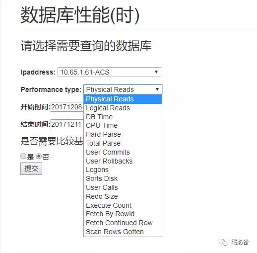
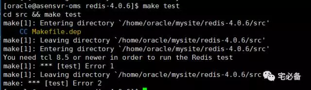
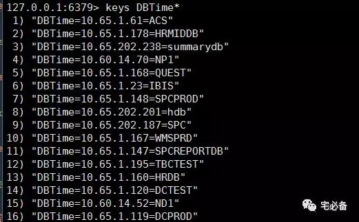
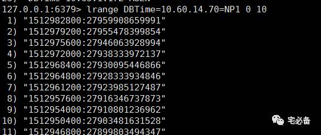
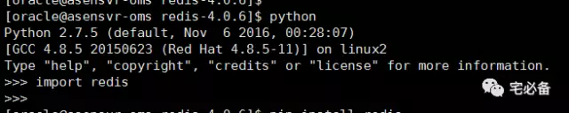

redis的介绍及安装
2017-12-11 Python 宅必备
开发环境
操作系统:CentOS 7.4
Python版本 :3.6
Django版本: 1.10.5
操作系统用户:oms
数据处理:pandas
数据存储:MySQL,redis
通过上面我们已介绍了如何定时获取TOP SQL语句以及如何利用pandas处理数据，并让其在前端显示
接下来这个专题介绍如何获取数据库的性能指标用来反应数据库的性能趋势
首先介绍下用来存储这些数据的redis
1. redis介绍
Redis是一个使用ANSI C编写的开源、支持网络、基于内存、可选持久性的键值对存储数据库。
从2015年6月开始，Redis的开发由Redis Labs赞助
而2013年5月至2015年6月期间，其开发由Pivotal赞助。
在2013年5月之前，其开发由VMware赞助。
根据月度排行网站DB-Engines.com的数据显示，Redis是最流行的键值对存储数据库。
2. 为何使用redis
我们使用redis作为保存Oracle系统数据的的数据库，我们将下列数据保存在里面，具体获取方式后面做介绍

另外该监控系统各系统的CPU及内存使用率也使用redis存储
3. 如何安装redis(root或普通用户)
对于配置我也不是完全了解，如有错误请指正
我们通过官方网站下载:
3.1 下载解压redis
wget http://download.redis.io/releases/redis-4.0.6.tar.gz
tar zxvf redis-4.0.6.tar.gz
3.2 安装redis
cd redis-4.0.6/
make
3.3 测试安装
make test
如出现You need tcl 8.5 or newer in order to run the Redis test.错误

则安装最新版的tcl
yum install tcl
3.4 配置redis
设置环境变量
安装完成后redis的可执行文件在安装文件的src目录下，我们需要添加到PATH中
PATH=$PATH:$HOME/.local/bin:$HOME/bin:/usr/local/python36/bin:/home/oms/software/redis-4.0.2/src
修改配置文件
redis的配置文件也在安装文件中，取消注释或修改如下参数
daemonize yes
pidfile /home/oms/redis_6379.pid
save 900 1
save 300 10
save 60 10000
dbfilename dump.rdb
appendonly yes
appendfilename "appendonly.aof"
appendfsync everysec
3.5 启动和关闭redis
启动redis
配置文件在安装文件中有模板
redis-server /home/oms/redis.conf &
进入redis CLI
redis-cli
关闭redis
127.0.0.1:6379> shutdown
一些简单的命令
keys DBTime*

lrange DBTime=10.60.14.70=NP1 0 10

3.6 安装redis for python
pip3 install redis

4. redis学习
推荐网站了解和学习redis
http://www.runoob.com/redis/redis-backup.html
https://redis.io/documentation
5. 源代码位置
欢迎访问我的github主页查看源码
https://github.com/bsbforever/oms_django
好了 关于redis就讲到这，下节开始讲如何获取信息并保存在redis中